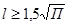
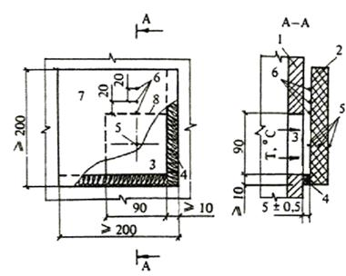
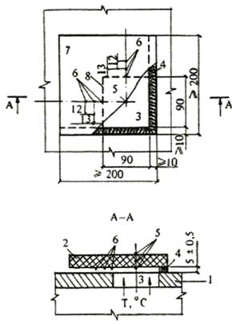
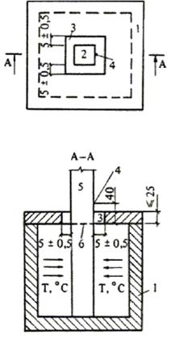
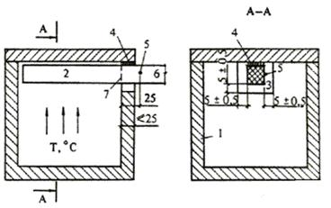

СТРОИТЕЛЬНЫЕ НОРМЫ И ПРАВИЛА
ПРОТИВОПОЖАРНЫЕ НОРМЫ
СНиП 2.01.02-85*
ГОССТРОЙ СССР
Москва 1991
РАЗРАБОТАНЫ ЦНИИСК им. Кучеренко Госстроя СССР (канд. техн. наук В.Н. Зигерн-Корн - руководитель темы; канд. техн. наук Л.Н. Брускова; д-р техн. наук И.Г. Романенков), ЦНИИпромзданий Госстроя СССР (канд. техн. наук В.В. Федоров, М.Я. Ройтман) при участии НИИЖБ, Промстройпроекта и Госхимпроекта Госстроя СССР, ЦНИИЭП зрелищных зданий и спортивных сооружений им. Б.С. Мезенцева, ЦНИИЭП учебных зданий и ЦНИИЭП жилища Госгражданстроя, МИСИ им. В.В. Куйбышева Минвуза СССР, ВНИИПО и ВИПТШ МВД СССР.
ВНЕСЕНЫ ЦНИИСК им. Кучеренко Госстроя СССР.
ПОДГОТОВЛЕНЫ К УТВЕРЖДЕНИЮ Главтехнормированием Госстроя СССР (Г.М. Хорин, Г.П. Кршеминский).
С введением в действие СНиП 2.01.02-85* «Противопожарные нормы» утрачивает силу СНиП II-2-80 «Противопожарные нормы проектирования зданий и сооружений».
В СНиП 2.01.02-85* внесено изменение № 1, утвержденное постановлением Госстроя СССР № 18 от 24 апреля 1991 г.
При пользовании нормативным документом следует учитывать утвержденные изменения строительных норм и правил и государственных стандартов, публикуемые в журнале «Бюллетень строительной техники», «Сборнике изменений к строительным нормам и правилам» Госстроя СССР и информационном указателе «Государственные стандарты СССР» Госстандарта.
|
Государственный комитет СССР |
Строительные |
СНиП 2.01.02-85* |
|
Противопожарные |
Взамен |
Настоящие нормы должны соблюдаться при разработке проектов зданий и сооружений.
Настоящие нормы устанавливают пожарно-техническую классификацию зданий и сооружений, их элементов, строительных конструкций, материалов, а также общие противопожарные требования к конструктивным и планировочным решениям помещений, зданий и сооружений различного назначения.
Настоящие нормы дополняются и уточняются противопожарными требованиями, изложенными в СНиП части 2 и в других нормативных документах1, утвержденных или согласованных Госстроем СССР.
_____________
1 Далее по тексту - "в СНиП части 2".
В настоящих нормах приняты термины и определения, приведенные в СТ СЭВ 383-76 и ГОСТ 12.1.033-81*.
1.1*. Здания, сооружения, а также части зданий и сооружений1, выделенные противопожарными стенами 1-го типа (пожарные отсеки), подразделяются по степеням огнестойкости. Степень огнестойкости зданий определяется минимальными пределами огнестойкости строительных конструкций (указанными в табл. 1) и максимальными пределами распространения огня по этим конструкциям.
___________
1 Далее по тексту - "здания".
Пределы огнестойкости самонесущих стен, учитываемых при расчете жесткости и устойчивости здания, необходимо принимать по гр. 2 табл. 1.
В случаях, когда в табл. 1 минимальный предел огнестойкости конструкции равен 0,25 ч, допускается применять незащищенные стальные конструкции, а в труднодоступных пунктах строительства, кроме того, наружные ограждающие конструкции из алюминиевых листов, независимо от их фактического предела огнестойкости.
В зданиях II степени огнестойкости производственного и складского назначения допускается применять колонны с пределом огнестойкости 0,75 ч.
Допускается в зданиях всех степеней огнестойкости применять гипсокартонные листы по ГОСТ 6266-89 для облицовки металлических конструкций с целью повышения их предела огнестойкости.
В зданиях всех степеней огнестойкости для выделения рабочих мест в пределах помещения допускается применять перегородки (остекленные или с сеткой при высоте глухой части не болев 1,2 м, сборно-разборные и раздвижные) с ненормируемыми пределами огнестойкости и пределами распространения огня.
1.2*. Степень огнестойкости зданий принимается в проекте в зависимости от их назначения, категории по взрывопожарной и пожарной опасности, этажности, площади этажа в пределах пожарного отсека, кроме случаев, установленных в нормативных документах.
Примерные конструктивные характеристики зданий в зависимости от их степени огнестойкости приведены в справочном приложении 2.
1.3. Пределы огнестойкости строительных конструкций определяются по СТ СЭВ 1000-78.
Пределы распространения огня по строительным конструкциям определяются по методу, приведенному в обязательном приложении 1.
1.4*. Строительные материалы по горючести (возгораемости) подразделяются на три группы: негорючие (несгораемые), трудногорючие (трудносгораемые) и горючие (сгораемые) 1.
_____________
1 Далее по тексту - "горючесть", "негорючие", "трудногорючие", "горючие".
Группы горючести строительных материалов определяются по СТ СЭВ 382-76 и СТ СЭВ 2437-80.
Классификация строительных материалов и конструкций по токсичности продуктов горения и дымообразующей способности при горении принимается в соответствии с ГОСТ 12.1.004-89.
1.5. Каркасы подвесных потолков следует выполнять из негорючих материалов.
Заполнения подвесных потолков допускается выполнять из горючих материалов, за исключением заполнений подвесных потолков в общих коридорах, на лестницах, в лестничных клетках, вестибюлях, холлах и фойе зданий I - IVа степеней огнестойкости.
В пространстве за подвесным потолком не допускается предусматривать размещение каналов и трубопроводов для транспортирования горючих газов, пылевоздушных смесей, жидкостей и материалов.
|
Внесены |
Утверждены |
Срок |
Таблица 1
|
Минимальные пределы огнестойкости строительных конструкций, ч (над чертой), и максимальные пределы распространения огня по ним, см (под чертой) |
|||||||||
|
стены |
колонны |
лестничные площадки, косоуры, ступени, балки и марши лестничных клеток |
плиты, настилы (в том числе с утеплителем) и другие несущие конструкции перекрытий |
элементы покрытий |
|||||
|
несущие и лестничных клеток |
самонесущие |
наружные ненесущие (в том числе из навесных панелей) |
внутренние ненесущие (перегородки) |
плиты, настилы (в том числе с утеплителем) и прогоны |
балки, фермы, арки, рамы |
||||
|
1 |
2 |
3 |
4 |
5 |
6 |
7 |
8 |
9 |
10 |
|
I |
2,5 0 |
1,25 0 |
0,5 0 |
0,5 0 |
2,5 0 |
1 0 |
1 0 |
0,5 0 |
0,5 0 |
|
II |
2 0 |
1 0 |
0,25 0 |
0,25 0 |
2 0 |
1 0 |
0,75 0 |
0,25 0 |
0,25 0 |
|
III |
2 0 |
1 0 |
0,25 0 0,5 40 |
0,25 40 |
2 0 |
1 0 |
0,75 25 |
н. н. н. н. |
н. н. н. н. |
|
IIIа |
1 0 |
0,5 0 |
0,25 40 |
0,25 40 |
0,25 0 |
1 0 |
0,25 0 |
0,25 25 |
0,25 0 |
|
IIIб |
1 40 |
0,5 0 |
0,25 0 0,5 40 |
0,25 40 |
1 40 |
0,75 0 |
0,75 25 |
0,25 0 0,5 (25)40 |
0,75 25(40) |
|
IV |
0,5 40 |
0,25 40 |
0,25 40 |
0,25 40 |
0,540 |
0,25 25 |
0,25 25 |
н. н. н. н. |
н. н. н. н. |
|
IVа |
0,5 40 |
0,25 40 |
0,25 н.н. |
0,25 40 |
0,25 0 |
0,25 0 |
0,25 0 |
0,25 н. н. |
0,25 0 |
|
V |
Не нормируются |
||||||||
Примечания: 1. В скобках приведены пределы распространения огня для вертикальных и наклонных участков конструкций.
2. Сокращение „н. н." означает, что показатель не нормируется.
При применении подвесных потолков для повышения пределов огнестойкости перекрытий и покрытий предел огнестойкости перекрытия или покрытия с подвесными потолками следует определять как для единой конструкции, а предел распространения огня - отдельно для перекрытия или покрытия и для подвесного потолка. При этом предел распространения огня по такому подвесному потолку должен быть не более установленного для защищаемого перекрытия или покрытия. Подвесные потолки не должны иметь проемов, а коммуникации, расположенные над подвесными потолками, следует выполнять из негорючих материалов.
1.6*. В зданиях I и II степеней огнестойкости допускается применять перегородки из гипсокартонных листов по ГОСТ 6266-89 с каркасом из негорючих материалов с пределами огнестойкости не менее соответственно 1 и 0,5 ч. При этом в общих коридорах, лестничных клетках, вестибюлях, холлах и фойе гипсокартонные листы не допускается окрашивать горючими красками.
1.7. Конструкции, образующие уклон пола в зальных помещениях, должны соответствовать нормам, установленным в табл. 1 для плит, настилов и других несущих конструкций перекрытий.
1.8. В зданиях всех степеней огнестойкости кровлю, стропила и обрешетку чердачных покрытий, полы, двери, ворота, переплеты окон и фонарей, а также отделку (в том числе облицовку) стен и потолков независимо от нормируемых пределов распространения огня по ним допускается выполнять из горючих материалов. При этом стропила и обрешетку чердачных покрытий (кроме зданий V степени огнестойкости) следует подвергать огнезащитной обработке. Качество огнезащитной обработки должно быть таким, чтобы потеря массы огнезащищенной древесины при испытании по СТ СЭВ 4686-84 не превышала 25 %.
В зданиях с чердаками (за исключением зданий V степени огнестойкости) при устройстве стропил и обрешетки из горючих материалов не допускается применять кровли из горючих материалов.
В помещениях, в которых производятся, применяются или хранятся горючие жидкости, полы следует выполнять из негорючих материалов.
В зданиях всех степеней огнестойкости, кроме V, не допускается выполнять облицовку из горючих материалов и оклейку горючими пленочными материалами стен и потолков в общих коридорах, в лестничных клетках, вестибюлях, холлах и фойе, а также устраивать из горючих материалов полы в вестибюлях, лестничных клетках и лифтовых холлах.
В зданиях I-III степеней огнестойкости не допускается выполнять из горючих и трудногорючих материалов облицовку внешних поверхностей наружных стен.
Дверцы встроенных шкафов для размещения пожарных кранов допускается выполнять из горючих материалов.
1.9. В стенах, перегородках, перекрытиях и покрытиях зданий не допускается предусматривать пустоты, ограниченные горючими материалами, за исключением пустот:
в деревянных конструкциях перекрытий и покрытий, разделенных глухими диафрагмами на участки площадью не более 54 м2, а также по контуру внутренних стен;
между стальным или алюминиевым профилированным листом и пароизоляцией при условии, что за пароизоляцией расположен утеплитель из негорючего или трудногорючего материала. При утеплителе из горючих материалов (в том числе без лароизоляции) эти пустоты по торцам листов должны быть заполнены негорючим или трудногорючим материалом на длину не менее 25 см;
между не распространяющими огонь конструкциями и их облицовками из горючих материалов со стороны помещений при условии разделения этих пустот глухими диафрагмами на участки площадью не более 3 м2;
между облицовками из горючих материалов и наружными поверхностями стен одноэтажных зданий высотой от уровня земли до карниза не более 6 м и площадью застройки не более 300 м2 при условии разделения этих пустот глухими диафрагмами на участки площадью не болев 7,2 м2.
Глухие диафрагмы допускается выполнять из горючих материалов.
2.1. Помещения, в которых применяются или хранятся горючие газы и жидкости, а также имеются процессы, связанные с образованием горючих пылей, не допускается размещать непосредственно под помещениями, предназначенными для одновременного пребывания более 50 чел.
Примечание. Показатели пожаровзрывоопасности веществ определяются по ГОСТ 12.1.044-84.
2.2. Подвалы под зданиями должны быть одноэтажными, за исключением случаев, предусмотренных в СНиП части 2.
В подвальных и цокольных этажах не допускается размешать помещения, в которых применяются или хранятся горючие газы и жидкости, а также легковоспламеняющиеся материалы.
2.3. В каждой части подвального этажа (в том числе в коридоре), выделенной противопожарными стенами или перегородками, с помещениями, в которых применяются или хранятся горючие вещества и материалы, следует предусматривать не менее двух окон размерами 0,75´1,2 м с приямками. Свободную площадь указанных окон необходимо принимать по расчету, но не менее 0,2 % площади этих помещений.
2.4. Помещения, расположенные в подвальных этажах и предназначенные для размещения инженерного оборудования и прокладки коммуникаций, следует отделять от других помещений противопожарными перегородками.
2.5. Технические подполья, предназначенные для прокладки инженерных сетей, должны иметь обособленные выходы наружу через двери размерами не менее 0,75´1,5 м или люки размерами не менее 0,6´0,8 м, оборудованные вертикальными лестницами.
При площади технического подполья до 300 м2 допускается устаивать одну дверь или люк, а на каждые последующие полные и неполные 2000 м2 площади следует предусматривать еще одну дверь или люк.
2.6*. В технических этажах (в том числе технических подпольях) высота проходов в свету должна быть не менее 1,8 м.
На чердаке вдоль всего здания необходимо предусматривать проход высотой не менее 1,6 м.
2.7. В зданиях с мансардами следует предусматривать люки в ограждающих конструкциях пазух чердаков.
2.8. В зданиях с уклоном кровли до 12 % включительно высотой от уровня земли до карниза или верха наружной стены (парапета) более 10 м, а также в зданиях с уклоном кровли свыше 12 % высотой от уровня земли до карниза более 7 м следует предусматривать ограждения на кровле в соответствии с ГОСТ 25772-83. Независимо от высоты здания ограждения в соответствии с указанным ГОСТом следует предусматривать для эксплуатируемых плоских кровель, балконов, лоджий, наружных галерей, открытых наружных лестниц, лестничных маршей и площадок.
2.9. Для зданий высотой 10 м и более от планировочной отметки земли до карниза или верха наружной стены (парапета) следует предусматривать выходы на кровлю из лестничных клеток (непосредственно или через чердак, за исключением теплого) или по наружным пожарным лестницам.
Для жилых, общественных и административно-бытовых зданий с чердачными покрытиями необходимо предусматривать выход на кровлю на каждые полные и неполные 100 м длины здания, с бесчердачными покрытиями - один выход на каждые полные и неполные 1000 м2 площади покрытия.
Для зданий производственного и складского назначения следует предусматривать пожарные лестницы по периметру здания не реже чем через 200 м. Допускается не предусматривать пожарные лестницы на главном фасаде здания, если ширина здания не превышает 150 м, а со стороны, противоположной главному фасаду, имеется линия противопожарного водопровода.
При определении требуемого числа выходов на кровлю допускается учитывать также другие наружные лестницы, имеющие выход на кровлю и отвечающие требованиям п. 2.12 или п. 4.20.
В чердаках зданий следует предусматривать выходы на кровлю, оборудованные стационарными лестницами, через двери, люки или окна размерами не менее 0,6´0,8 м.
Допускается не предусматривать выход на кровлю одноэтажных зданий с покрытием площадью не более 100 м2.
2.10. Выходы из лестничных клеток на кровлю или чердак следует предусматривать по лестничным маршам с площадками перед выходом, через противопожарные двери 2-го типа.
В жилых, общественных и административно-бытовых зданиях высотой до пяти этажей включительно допускается устройство выходов на чердак или кровлю из лестничных клеток через противопожарные люки 2-го типа размерами 0,6´0,8 м по закрепленным стальным стремянкам.
2.11. В местах перепада высот кровель (в том числе для подъема на кровлю светоаэрационных фонарей) более 1 м следует предусматривать наружные пожарные лестницы независимо от высоты зданий.
2.12. Устанавливаются следующие типы пожарных лестниц:
1-й - вертикальные стальные шириной 0,7 м, начинающиеся с высоты 2,5 м, с площадками при выходе на кровлю. С высоты 10 м лестницы должны иметь дуги через каждые 0,7 м с радиусом закругления 0,35 м и с центром, отнесенным от лестницы на 0,45 м. Площадка при выходе на кровлю должна иметь ограждение высотой не менее 0,6 м;
2-й - маршевые стальные с уклоном не более 6 : 1, шириной 0,7 м, начинающиеся с высоты 2,5 м от уровня земли, с площадками не реже чем через 8 м и с поручнями.
2.13. Для подъема на высоту от 10 до 20 м и в местах перепада высот кровель от 1 до 20 м следует применять пожарные лестницы 1-го типа, для подъема на высоту болев 20 м и в местах перепада высот более 20 м - пожарные лестницы 2-го типа.
2.14. При прокладке кабелей и трубопроводов через ограждающие конструкции с нормируемыми пределами огнестойкости и пределами распространения огня зазоры между ними следует заполнять строительным раствором на всю толщину.
3.1*. К противопожарным преградам относятся противопожарные стены, перегородки, перекрытия, зоны, тамбуры-шлюзы, двери, окна, люки, клапаны.
Область применения противопожарных преград устанавливается в пп. 1.1, 2.4, 3.4, 3.11, 3.13, 3.15, 3.17, 3.21 и в СНиП части 2.
3.2*. Типы противопожарных преград и их минимальные пределы огнестойкости следует принимать по табл. 2.
Таблица 2*
|
Тип противопожарных преград или их элементов |
Минимальный предел огнестойкости противопожарных преград или их элементов, ч |
|
|
Противопожарные стены |
1 |
2,5 |
|
2 |
0,75 |
|
|
Противопожарные перегородки |
1 |
0,75 |
|
2 |
0,25 |
|
|
Противопожарные перекрытия |
1 |
2,5 |
|
2 |
1 |
|
|
3 |
0,75 |
|
|
Противопожарные двери и окна |
1 |
1,2 |
|
2 |
0,6 |
|
|
3 |
0,25 |
|
|
Противопожарные ворота, люки, клапаны |
1 |
1,2 |
|
2 |
0,6 |
|
|
Тамбуры-шлюзы |
||
|
Элементы тамбуров-шлюзов: |
||
|
противопожарные перегородки |
1 |
0,75 |
|
противопожарные перекрытия |
3 |
0,75 |
|
противопожарные двери |
2 |
0,6 |
|
Противопожарные зоны (см. п. 3.13) |
1 |
- |
|
Элементы противопожарных зон: |
||
|
противопожарные стены, отделяющие, зону от помещений пожарных отсеков |
2 |
0,75 |
|
противопожарные перегородки внутри зоны |
2 |
0,25 |
|
колонны |
- |
2,5 |
|
противопожарные перекрытия |
3 |
0,75 |
|
элементы покрытия |
- |
0,75 |
|
наружные стены |
- |
0,75 |
Противопожарные стены, перегородки, перекрытия, конструкции противопожарных зон и тамбуров-шлюзов, а также заполнение световых проемов в противопожарных преградах должны выполняться из негорючих материалов.
Допускается в противопожарных дверях и люках 1-го и 2-го типов применять древесину, защищенную со всех сторон негорючими материалами толщиной не менее 4 мм или подвергнутую глубокой пропитке антипиренами или другой огнезащитной обработке, обеспечивающей ее соответствие требованиям, предъявляемым к трудногорючим материалам.
Допускается в качестве противопожарных применять перегородки из гипсокартонных листов по ГОСТ 6266-89, с каркасом из негорючих материалов, с пределом огнестойкости не менее 1,25 ч для перегородок 1-го типа и 0,75 ч для перегородок 2-го типа. Узлы сопряжения этих перегородок с другими конструкциями должны иметь предел огнестойкости не менее 1,25 ч и 0,75 ч соответственно.
3.3. Предел огнестойкости противопожарных дверей и ворот следует определять по СТ СЭВ 3974-85, а противопожарных окон, люков и клапанов - по СТ СЭВ 1000-78. При этом предельные состояния по огнестойкости для окон характеризуются только обрушением и потерей плотности, а для противопожарных дверей лифтовых шахт - только теплоизолирующей способностью и потерей плотности дверного полотна.
3.4. В противопожарных стенах 1-го и 2-го типов следует предусматривать противопожарные двери, ворота, окна и клапаны соответственно 1-го и 2-го типов.
В противопожарных перегородках 1-го типа следует предусматривать противопожарные двери, ворота, окна и клапаны 2-го типа, а в противопожарных перегородках 2-го типа - противопожарные двери и окна 3-го типа.
В противопожарных перекрытиях 1-го типа следует применять противопожарные люки и клапаны 1-го типа, а в противопожарных перекрытиях 2-го и 3-го типов - противопожарные люки и клапаны 2-го типа.
3.5. Противопожарные стены должны опираться на фундаменты или фундаментные балки, возводиться на всю высоту здания, пересекать все конструкции и этажи.
Противопожарные стены допускается устанавливать непосредственно на конструкции каркаса здания или сооружения, выполненные из негорючих материалов. При этом предел огнестойкости каркаса вместе с его заполнением и узлами креплений должен быть не менее требуемого предела огнестойкости соответствующего типа противопожарной стены.
3.6. Противопожарные стены должны возвышаться над кровлей: не менее чем на 60 см, если хотя бы один из элементов чердачного или бесчердачного покрытия, за исключением кровли, выполнен из горючих материалов; не менее чем на 30 см, если элементы чердачного или бесчердачного покрытия, за исключением кровли, выполнены из трудногорючих материалов.
Противопожарные стены могут не возвышаться над кровлей, если все элементы чердачного или бесчердачного покрытия, за исключением кровли, выполнены из негорючих материалов.
3.7. Противопожарные стены в зданиях с наружными стенами, выполненными с применением горючих или трудногорючих материалов, должны пересекать эти стены и выступать за наружную плоскость стены не менее чем на 30 см.
При устройстве наружных стен из негорючих материалов с ленточным остеклением противопожарные стены должны разделять остекление. При этом допускается, чтобы противопожарная стена не выступала за наружную плоскость стены.
3.8. При разделении здания на пожарные отсеки противопожарной должна быть стена более высокого и более широкого отсека. Допускается в наружной части противопожарной стены размещать окна, двери и ворота с ненормируемыми пределами огнестойкости на расстоянии над кровлей примыкающего отсека не менее 8 м по вертикали и не менее 4 м от стен по горизонтали.
3.9. В противопожарных стенах допускается устраивать вентиляционные и дымовые каналы так, чтобы в местах их размещения предел огнестойкости противопожарной стены с каждой стороны канала был не менее 2,5 ч.
3.10. Противопожарные перегородки в помещениях с подвесными потолками должны разделять пространство над ними.
3.11. При размещении противопожарных стен или противопожарных перегородок в местах примыкания одной части здания к другой под углом необходимо, чтобы расстояние по горизонтали между ближайшими гранями проемов, расположенных в наружных стенах, было не менее 4 м, а участки стен, карнизов и свесов крыш, примыкающие к противопожарной стене или перегородке под углом, на длине не менее 4 м были выполнены из негорючих материалов. При расстоянии между указанными проемами менее 4 м они должны заполняться противопожарными дверями или окнами 2-го типа.
3.12. Противопожарные перекрытия должны примыкать к наружным стенам, выполненным из негорючих материалов, без зазоров. Противопожарные перекрытия в зданиях с наружными стенами, распространяющими огонь, или с остеклением, расположенным в уровне перекрытия, должны пересекать эти стены и остекление.
3.13. Допускается в случаях, предусмотренных в СНиП части 2, для разделения зданий на пожарные отсеки вместо противопожарных стен предусматривать противопожарные зоны 1-го типа.
Противопожарная зона 1-го типа выполняется в виде вставки, разделяющей здание по всей ширине (длине) и высоте. Вставка представляет собой часть здания, образованную противопожарными стенами 2-го типа, которые отделяют вставку от пожарных отсеков. Ширина зоны должна быть не менее 12 м.
В помещениях, расположенных в пределах противопожарной зоны, не допускается применять или хранить горючие газы, жидкости и материалы, а также предусматривать процессы, связанные с образованием горючих пылей.
Допускается в покрытии противопожарной зоны применять утеплитель из трудногорючих материалов и кровлю из горючих материалов с учетом требований п. 3.6.
В противопожарных стенах зоны допускается устройство проемов при условии их заполнения а соответствии с п. 3.17.
3.14*. Исключен.
3.15. Конструктивные решения противопожарных зон в сооружениях следует принимать по СНиП 2.09.03-85.
3.16. Противопожарные стены и зоны должны сохранять свои функции при одностороннем обрушении примыкающих к ним конструкций.
3.17. В противопожарных преградах допускается предусматривать проемы при условии их заполнения противопожарными дверями, окнами, воротами, люками и клапанами или при устройстве в них тамбуров-шлюзов. Общая площадь проемов в противопожарных преградах, за исключением ограждений лифтовых шахт, не должна превышать 25 % их площади. Противопожарные двери и ворота в противопожарных преградах должны иметь уплотнения в притворах и приспособления для самозакрывания. Противопожарные окна должны быть неоткрывающимися.
3.18. Двери тамбуров-шлюзов со стороны помещений, в которых не применяются и не хранятся горючие газы, жидкости и материалы, а также отсутствуют процессы, связанные с образованием горючих пылей, допускается выполнять из горючих материалов толщиной не менее 4 см и без пустот.
В тамбурах-шлюзах следует предусматривать подпор воздуха в соответствии со СНиП 2.04.05-86.
3.19. Противопожарные стены, зоны, а также противопожарные перекрытия 1-го типа не допускается пересекать каналами, шахтами и трубопроводами для транспортирования горючих газо- и пылевоздушных смесей, горючих жидкостей, веществ и материалов.
3.20. В местах пересечения противопожарных стен, противопожарных зон, а также противопожарных перекрытий 1-го типа каналами, шахтами и трубопроводами (за исключением трубопроводов водоснабжения, канализации, парового и водяного отопления) для транспортирования сред, отличных от указанных в п. 3.19, следует предусматривать автоматические устройства, предотвращающие распространение продуктов горения по каналам, шахтам и трубопроводам при пожаре.
3.21. Ограждающие конструкции лифтовых шахт, помещений машинных отделений лифтов, каналов, шахт и ниш для прокладки коммуникаций должны соответствовать требованиям, предъявляемым к противопожарным перегородкам 1-го типа и перекрытиям 3-го типа.
При невозможности устройства в ограждениях лифтовых шахт противопожарных дверей следует предусматривать тамбуры или холлы с противопожарными перегородками 1-го типа и перекрытиями 3-го типа.
3.22. При проектировании пересечений противопожарных преград воздуховодами следует руководствоваться указаниями СНиП 2.04.05-86.
4.1. Эвакуационные пути должны обеспечивать безопасную эвакуацию всех людей, находящихся в помещениях зданий, через эвакуационные выходы.
4.2. Выходы являются эвакуационными, если они ведут из помещений:
а) первого этажа наружу непосредственно или через коридор, вестибюль, лестничную клетку;
б) любого этажа, кроме первого, в коридор, ведущий на лестничную клетку, или непосредственно в лестничную клетку (в том числе через холл). При этом лестничные клетки должны иметь выход наружу непосредственно или через вестибюль, отделенный от примыкающих коридоров перегородками с дверями;
в) в соседнее помещение на том же этаже, обеспеченное выходами, указанными в подпунктах "а" и "б", за исключением случаев, указанных в СНиП части 2.
При устройстве эвакуационных выходов из двух лестничных клеток через общий вестибюль одна из них кроме выхода в вестибюль должна иметь выход непосредственно наружу.
Выходы наружу допускается предусматривать через тамбуры.
4.3*. Из зданий, с каждого этажа и из помещения следует предусматривать не менее двух эвакуационных выходов, за исключением случаев, указанных в СНиП части 2.
Эвакуационные выходы должны располагаться рассредоточенно. Минимальное расстояние l между наиболее удаленными один от другого эвакуационными выходами из помещения следует определять по формуле

где П - периметр помещения.
4.4. Из помещения площадью до 300 м2, расположенного в подвальном или цокольном этаже, допускается предусматривать один эвакуационный выход, если число постоянно находящихся в нем не превышает 5 чел. При числе людей от 6 до 15 допускается предусматривать второй выход через люк размерами не менее 0,6´0,8 м с вертикальной лестницей или через окно размерами не менее 0,75´1,5 м с приспособлением для выхода.
4.5*. Выходы из подвалов и цокольных этажей следует предусматривать непосредственно наружу, за исключением случаев, указанных в СНиП части 2.
4.6. Ширина путей эвакуации в свету должна быть не менее 1 м, дверей - не менее 0,8 м.
При дверях, открывающихся из помещений в общие коридоры, за ширину эвакуационного пути по коридору следует принимать ширину коридора, уменьшенную:
на половину ширины дверного полотна - при одностороннем расположении дверей;
на ширину дверного полотна - при двустороннем расположении дверей.
Высота прохода на путях эвакуации должна быть не менее 2 м.
Допускаемую длину путей эвакуации следует принимать по СНиП части 2.
4.7. В полу на путях эвакуации не допускаются перепады высот менее 45 см и выступы, за исключением порогов в дверных проемах. В местах перепада высот следует предусматривать лестницы с числом ступеней не менее трех или пандусы с уклоном не более 1 : 6.
4.8. В общих коридорах не допускается предусматривать устройство встроенных шкафов, за исключением шкафов для коммуникаций и пожарных кранов.
4.9. Устройство винтовых лестниц, забежных ступеней, раздвижных и подъемных дверей и ворот, а также вращающихся дверей и турникетов на путях эвакуации не допускается.
4.10. В вестибюлях допускается размещать комнаты охраны, открытый гардероб и торговые лотки.
4.11. В лестничных клетках не допускается предусматривать помещения любого назначения, промышленные газопроводы и паропроводы, трубопроводы с горючими жидкостями, электрические кабели и провода (за исключением электропроводки для освещения коридоров и лестничных клеток), выходы из подъемников и грузовых лифтов, мусоропроводы, а также оборудование, выступающее из плоскости стен на высоте до 2,2 м от поверхности проступей и площадок лестницы.
В зданиях высотой от уровня земли до пола верхнего этажа менее 26,5 м допускается в лестничных клетках предусматривать мусоропроводы и электропроводку для освещения квартир.
В лестничных клетках (кроме незадымляемых) допускается размещать не более двух пассажирских лифтов, опускающихся не ниже первого этажа.
4.12. Двери на путях эвакуации должны открываться по направлению выхода из здания.
Двери на балконы, лоджии (за исключением дверей, ведущих в воздушную зону незадымляемых лестничных клеток 1-го типа) и на площадки наружных лестниц, предназначенных для эвакуации, двери из помещений с одновременным пребыванием не более 15 чел., двери из кладовых площадью не более 200 м2 и санитарных узлов допускается проектировать открывающимися внутрь помещений.
4.13. Высота дверей в свету на путях эвакуации должна быть не менее 2 м.
Высоту дверей и проходов, ведущих в помещения без постоянного пребывания в них людей, а также в подвальные, цокольные и технические этажи, допускается уменьшать до 1,9 м, а дверей, являющихся выходом на чердак или бесчердачное покрытие, - до 1,5 м.
4.14. Наружные эвакуационные двери зданий не должны иметь запоров, которые не могут быть открыты изнутри без ключа.
4.15. Двери лестничных клеток, ведущие в общие коридоры, двери лифтовых холлов и тамбуров-шлюзов должны иметь приспособления для самозакрывания и уплотнения в притворах и не должны иметь запоров, препятствующих их открыванию без ключа.
В зданиях высотой более четырех этажей указанные двери, кроме квартирных, должны быть глухими или с армированным стеклом. Ширина наружных дверей лестничных клеток и дверей в вестибюль должна быть не менее расчетной ширины марша лестницы.
Двери лестничных клеток в открытом положении не должны уменьшать расчетную ширину лестничных площадок и маршей.
4.16. Для эвакуации людей из зданий предусматриваются:
лестницы типов:
1-й - внутренние, размещаемые в лестничных клетках;
2-й - внутренние открытые (без ограждающих стен);
3-й - наружные открытые;
обычные лестничные клетки типов:
1-й - с естественным освещением через окна в наружных стенах (в том числе открытые во внешнюю среду);
2-й - без естественного освещения через окна в наружных стенах (в том числе с верхним освещением);
незадымляемые лестничные клетки типов:
1-й -с выходом через наружную воздушную зону по балконам, лоджиям, открытым переходам, галереям;
2-й - с подпором воздуха при пожаре;
3-й - с выходом в лестничную клетку через тамбур-шлюз с подпором воздуха (постоянным или при пожаре).
Область применения указанных лестниц и лестничных клеток устанавливается в СНиП части 2.
4.17. Ширина марша лестницы должна быть не менее ширины эвакуационного выхода (двери) в лестничную клетку.
Ширина лестничных площадок должна быть не менее ширины марша, а перед входами в лифты с распашными дверями - не менее суммы ширины марша и половины ширины двери лифта, но не менее 1,6 м.
Между маршами лестниц следует предусматривать зазор шириной не менее 50 мм.
4.18. Эскалаторы следует проектировать по нормам, установленным для проектирования лестниц, с учетом требований п. 4.19.
4.19. В зданиях I и II степеней огнестойкости допускается предусматривать лестницы 2-го типа из вестибюлей до второго этажа. В этом случае вестибюль должен отделяться от коридоров и смежных помещений противопожарными перегородками 1-го типа.
4.20. Лестницы 3-го типа, предназначенные для применения в качестве второго эвакуационного выхода, должны выполняться из негорючих материалов и сообщаться с помещениями через площадки или балконы, устраиваемые на уровне эвакуационных выходов. Указанные лестницы должны иметь уклон не более 1 : 1 и ширину не менее 0,7 м. Двери выходов на лестницы 3-го типа не должны иметь замков или других запоров снаружи.
4.21. Устройство проемов (за исключением дверных) во внутренних стенах лестничных клеток не допускается.
В световых проемах лестничных клеток, заполненных стеклоблоками, следует предусматривать открывающиеся фрамуги площадью не менее 1,2 м2 на каждом этаже.
4.22. В зданиях с незадымляемыми лестничными клетками лифтовые шахты следует предусматривать с подпором воздуха при пожаре в соответствии со СНиП 2.04.05-86. Выходы из этих шахт следует предусматривать через лифтовые холлы, отделяемые от смежных помещений противопожарными перегородками 1-го типа. В этом случае устройство противопожарных дверей в лифтовых шахтах не требуется.
4.23. Незадымляемые лестничные клетки в пределах первого этажа должны иметь выходы только непосредственно наружу. Незадымляемые лестничные клетки 1-го типа должны сообщаться с первым этажом через воздушную зону.
4.24. В зданиях с незадымляемыми лестничными клетками следует предусматривать дымоудаление из коридоров на каждом этаже в соответствии со СНиП 2.04.05-86. Эти коридоры следует разделять противопожарными перегородками 2-го типа не реже чем через 60 м.
В зданиях, оборудованных установками пожаротушения и сигнализацией, в которых противопожарные двери в указанных перегородках по условиям эксплуатации должны находиться в открытом положении, следует предусматривать автоматические устройства для закрывания этих дверей при пожаре.
4.25. Балконы, лоджии или галереи, ведущие к незадымляемым лестничным клеткам 1-го типа, должны иметь ширину не менее 1,2 м с высотой ограждения 1,2 м. Расстояние в осях междудверными проемами в наружной воздушной зоне должно быть не менее 2,2 м.
4.26. Лифты и другие механические средства транспортирования людей не следует учитывать при проектировании путей эвакуации.
Допускается в случаях, предусмотренных в СНиП части 2, один из лифтов оборудовать для использования пожарными подразделениями при пожаре.
4.27. Пассажирские лифты, размещаемые в лестничных клетках, допускается ограждать металлическими сетками, перегородками из армированного стекла и других негорючих материалов с ненормируемыми пределами огнестойкости, а лифты, размещаемые вне зданий, - только перегородками из негорючих материалов с ненормируемыми пределами огнестойкости.
4.28. В зданиях, как правило, следует предусматривать оповещение о пожаре. Способ оповещения (технические средства или организационные меры) определяется в зависимости от назначения здания и его объемно-планировочного и конструктивного решения.
Настоящий метод устанавливает способ определения предела распространения огня по строительным конструкциям и их элементам1 при огневых испытаниях.
_____________
1 Далее по тексту - "конструкции".
Предел распространения огня по конструкциям, выполненным полностью из негорючих материалов, следует принимать равным нулю без испытаний.
1. Сущность метода.
Испытание на распространение огня заключается в определении размера повреждения конструкции вследствие ее горения за пределами зоны нагрева - в контрольной зоне. Распространение огня по конструкциям определяется на основании испытаний образцов на специальных огневых печах.
2. Образцы для испытаний:
2.1. Образцы конструкций для испытаний должны быть выполнены в соответствии с рабочими чертежами и техническими условиями на их изготовление.
2.2. Образцы ограждающих конструкций должны иметь размеры не менее 2´2 м. Длина образцов стержневых конструкций должна обеспечивать возможность их крепления в соответствии со схемами, приведенными на черт. 3 и 4.
2.3. Влажность материалов образца должна быть динамически уравновешенной с влажностью окружающей среды при относительной влажности 60 ± 15 % и температуре 20 ± 10 °С.
2.4. Образцы, имеющие ребра и выступы, следует располагать на печи так, чтобы они не препятствовали распространению огня в контрольной зоне.
3. Проведение испытаний:
3.1. Испытания образцов конструкций на распространение огня проводятся при локальном воздействии огня по режиму, установленному СТ СЭВ 1000-78.
3.2. Распространение огня по несущим конструкциям (перекрытиям, покрытиям, колоннам и др.) определяется, как правило, при испытании ненагруженных образцов.
3.3. Испытания должны проводиться при начальной температуре 20 ± 10 °С и скорости движения воздуха не более 0,5 м/с-1, если условия эксплуатации конструкций не требуют других условий испытаний. Температура в помещении, печи и испытуемого образца должна быть стабилизирована за 2 ч до начала испытаний.
3.4. Стыки плит и панелей ограждающих конструкций должны находиться в зоне нагрева с продолжением их в контрольную зону.
3.5. Установка образца на огневой печи и размещение термопар осуществляются в соответствии со схемами, приведенными на черт. 1-4. Зазор между нагреваемой поверхностью образца и наружной поверхностью печи должен быть 5 ± 0,5 см.
3.6. Длительность теплового воздействия на образец составляет 15 мин ± 30 с. По истечении указанного времени пламя в печи гасится, и не позднее чем через 2 мин необходимо снять образец с печи или в зазор между образцом и огневой камерой ввести теплоизолирующий экран.
3.7. Обследование состояния образца и измерение его повреждений в контрольной зоне вследствие горения проводятся после его полного остывания.
3.8. Образцы ограждающих конструкций, лестничных площадок и маршей в процессе их испытания необходимо подвергать огневому воздействию с одной стороны.
Наружные и внутренние стены (в том числе перегородки) с несимметричным сечением следует испытывать отдельно с каждой стороны.
Плиты и настилы покрытий и перекрытий, а также подвесные потолки следует испытывать при огневом воздействии снизу.
Лестничные площадки и марши следует испытывать в горизонтальном положении отдельно с каждой стороны при огневом воздействии снизу.
Образцы наружных и внутренних стен (в том числе перегородок), а также лестничных площадок и маршей допускается испытывать только со стороны с заведомо большим пределом распространения огня.
3.9. Образцы стержневых конструкций должны подвергаться огневому воздействию с трех или четырех сторон в зависимости от условий эксплуатации. Образцы ступеней для испытаний должны быть собраны в марши.
3.10. Размер контрольной зоны должен быть не менее 0,75 м.
3.11. Во время испытаний следует контролировать:
температуру в печи;
время появления и характер развития в образце трещин, отверстий и отслоений;
время и место раскрытия стыков плит, панелей и других элементов конструкций;
появление дыма и пламени, изменение цвета и состояния материалов и другие особенности поведения конструкций.
4. Оценка результатов испытаний:
4.1. За предел распространения огня принимается размер поврежденной зоны образца в плоскости конструкции от границы зоны нагрева перпендикулярно ей до наиболее удаленной точки повреждения (для вертикальных конструкций - вверх, для горизонтальных - в каждую сторону). Результаты измерения округляются до 1 см в большую сторону. Допускается принимать предел распространения огня по конструкциям равным нулю, если размер повреждения образца в контрольной зоне не превышает 5 см для вертикальных и 3 см для горизонтальных конструкций.

Черт. 1. Схема установки на огневую печь образца вертикальной ограждающей конструкции
1 - огневая печь; 2 - образец; 3 - проем огневой печи; 4 - уплотнение из минеральной ваты; 5, 6 - термопары (термопары 6 следует располагать на границе ближайшего к огневой печи слоя, выполненного из горючего или трудногорючего материала); 7 - контрольная зона; 8 - граница контрольной зоны

Черт. 2. Схема установки на огневую печь
образца горизонтальной ограждающей
конструкции
1 - огневая печь; 2 - образец; 3 - проем огневой печи; 4 - уплотнение из минеральной ваты; 5, 6 - термопары (термопары 6 следует располагать на границе ближайшего к огневой печи слоя, выполненного из горючего или трудногорючего материала); 7 - контрольная зона; 8 - граница контрольной зоны

Черт. 3. Схема установки на огневую печь
образца вертикальной
стержневой конструкции
1 - огневая печь; 2 - образец; 3 - проем огневой печи; 4 - термопара; 5 - контрольная зона; 6 - граница контрольной зоны

Черт. 4. Схема установки на огневую печь образца горизонтальной стержневой конструкции
1 - огневая печь; 2 - образец; 3 - проем огневой печи; 4 - уплотнение из минеральной ваты; 5 - термопара; 6 - контрольная зона; 7 - граница контрольной зоны
Для измерения размеров повреждения слоистых конструкций необходимо путем вскрытия обследовать все слои.
4.2. Повреждениями считаются обугливание и выгорание материалов, а также оплавление термопластичных материалов. При этом не учитывается повреждение слоев пароизоляции толщиной менее 2 мм.
4.3. При определении предела распространения огня следует учитывать результаты огневых испытаний двух одинаковых образцов конструкции. Предел распространения огня по конструкции определяется как среднее арифметическое результатов испытаний не менее чем двух образцов. При этом показатели наиболее высокого и наиболее низкого пределов распространения огня по двум испытанным образцам не должны отличаться более чем на 15 % (от большего значения). Если результаты отличаются более чем на 15 %, то должны быть проведены дополнительные испытания. Если испытание проведено на одном образце, то для установления предела распространения огня по конструкции результат испытания необходимо умножить на 1,2.
5. Протокол испытаний должен содержать:
наименование организации, проводящей испытания;
наименование организации-заказчика;
наименование изделия с указанием технической документации на его изготовление;
дату испытаний;
наименование нормативного документа, в соответствии с которым проведено испытание;
чертежи и описание конструкции образцов;
данные о метеоусловиях при испытаниях;
для несимметричных внутренних стен и перегородок - указание стороны, подвергнутой огневому воздействию при испытании;
описание поведения образца при испытании, запись контролируемых параметров, включая показания термопар, и результатов их обработки;
результаты измерения границ повреждения образца в контрольной зоне вследствие его горения;
заключение с указанием предела распространения огня по конструкции;
фотоснимок конструкции в процессе и после испытания, а при необходимости - и после вскрытия внутренних слоев.
|
Степень огнестойкости |
Конструктивные характеристики |
|
I |
Здания с несущими и ограждающими конструкциями из естественных или искусственных каменных материалов, бетона или железобетона с применением листовых и плитных негорючих материалов |
|
II |
То же. В покрытиях зданий допускается применять незащищенные стальные конструкции |
|
III |
Здания с несущими и ограждающими конструкциями из естественных или искусственных каменных материалов, бетона или железобетона. Для перекрытий допускается использование деревянных конструкций, защищенных штукатуркой или трудногорючими листовыми, а также плитными материалами. К элементам покрытий не предъявляются требования по пределам огнестойкости и пределам распространения огня, при этом элементы чердачного покрытия из древесины подвергаются огнезащитной обработке |
|
IIIа |
Здания преимущественно с каркасной конструктивной схемой. Элементы каркаса - из стальных незащищенных конструкций. Ограждающие конструкции - из стальных профилированных листов или других негорючих листовых материалов с трудногорючим утеплителем |
|
IIIб |
Здания преимущественно одноэтажные с каркасной конструктивной схемой. Элементы каркаса - из цельной или клееной древесины, подвергнутой огнезащитной обработке, обеспечивающей требуемый предел распространения огня. Ограждающие конструкции - из панелей или поэлементной сборки, выполненные с применением древесины или материалов на ее основе. Древесина и другие горючие материалы ограждающих конструкций должны быть подвергнуты огнезащитной обработке или защищены от воздействия огня и высоких температур таким образом, чтобы обеспечить требуемый предел распространения огня. |
|
IV |
Здания с несущими и ограждающими конструкциями из цельной или клееной древесины и других горючих или трудногорючих материалов, защищенных от воздействия огня и высоких температур штукатуркой или другими листовыми или плитными материалами. К элементам покрытий не предъявляются требования по пределам огнестойкости и пределам распространения огня, при этом элементы чердачного покрытия из древесины подвергаются огнезащитной обработке |
|
IVа |
Здания преимущественно одноэтажные с каркасной конструктивной схемой. Элементы каркаса - из стальных незащищенных конструкций. Ограждающие конструкции - из стальных профилированных листов или других негорючих материалов с горючим утеплителем |
|
V |
Здания, к несущим и ограждающим конструкциям которых не предъявляются требования по пределам огнестойкости и пределам распространения огня |
Примечание. Строительные конструкции зданий, приведенные в настоящем приложении, должны отвечать требованиям табл. 1 и другим нормам настоящего СНиП.
СОДЕРЖАНИЕ